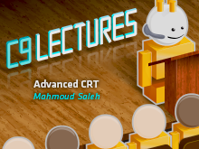

You first met Mahmoud Saleh in an episode of C9::GoingNative covering CRT (C Run-time Library). Mahmoud is the keeper of the CRT(C Run-time Library) at Microsoft, working on the VC++ team as a…
C9 Lectures: Mahmoud Saleh - Advanced CRT 1 of 2[WMV] [2011/10/07]You first met Mahmoud Saleh in an episode of C9::GoingNative covering CRT (C Run-time Library). Mahmoud is the keeper of the CRT(C Run-time Library) at Microsoft, working on the VC++ team as a…
C9 Lectures: Mahmoud Saleh - Advanced CRT, 2 of 2 [WMV] [2011/12/07]
[WMV] [2011/12/07]You first met Mahmoud Saleh in an episode of C9::GoingNative covering CRT (C Run-time Library). Mahmoud is the keeper of the CRT(C Run-time Library) at Microsoft, working on the VC++ team as a…